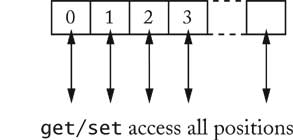
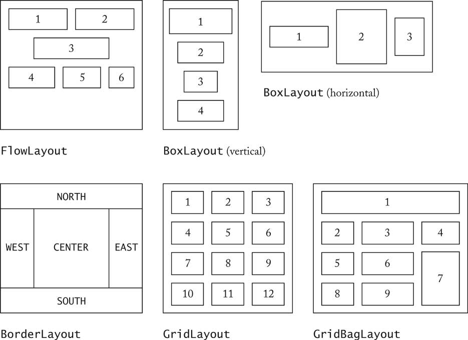
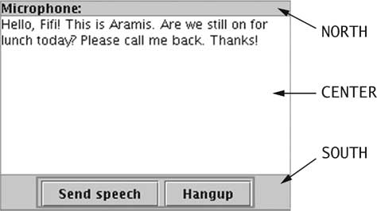
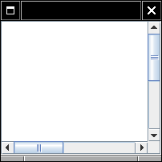
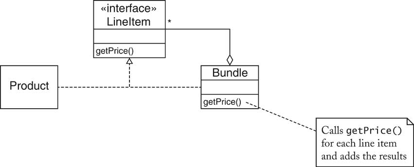

Object-Oriented Design & Patterns
Cay S. Horstmann
Chapitre 5
Patrons et Programmation d'interface utilisateur

Matière du chapitre
- Itérateurs
- Concept d'un Patron
- Patron OBSERVATEUR
- Gestionnaires de disposition et le patron STRATÉGIE
- Components, Containers et le patron COMPOSITE
- Barres de défilement et le patron DÉCORATEUR
- Comment reconnaître les patrons
- Appliquer les patrons
Itérateurs de liste
LinkedList<String> list = . . .;
ListIterator<String> iterator = list.listIterator();
while (iterator.hasNext())
{
String current = iterator.next();
. . .
}
- Pourquoi utiliser des itérateurs?
Structure de données classique (liste)
Survol des structures de données
- Queue

- Tableau avec accès aléatoire

- Liste
???
Liste avec curseur

for (list.reset(); list.hasNext(); list.next())
{
Object x = list.get();
. . .
}
- Désavantage : seulement un curseur par liste
- Itérateur est un concept plus puissant
Concept de patron
- Histoire: Patrons architecturaux (Architectural Patterns)
- Christopher Alexander
- Chaque patron a
- un nom court
- une courte description du contexte
- une longue description du problème
- une prescription de la solution
Patron "Passages courts"
Patron "Passages courts"
Contexte
"... les longs, stériles couloirs ont préparé le terrain
pour tout ce qui est mauvais au sujet de l'architecture moderne..."
Problème
une description détaillée du problème, comprenant
- une image déprimante
- des préoccupations à propos de la lumière et des meubles
- la recherche au sujet de l'anxiété des patients dans les hôpitaux
- la recherche qui suggère que les couloirs plus longs que 50 pieds sont
considérés gênants
Patron "Passages courts"
Solution
Garder les passages courts. Les construire comme des pièces autant possible,
avec des tapis ou du bois par terre, des meubles, des étagères à livres, des
belles fenêtres. Les rendre spacieux et bien éclairés. Les meilleurs couloirs
sont ceux avec des fenêtres tout au long d'un mur.

Patron Itérateur
Contexte
- un agrégat est composé de plusieurs objets élémentaires
- des clients ont besoin d'accéder aux objets élémentaires
- l'agrégat ne devrait pas révéler sa structure interne
- de multiples clients pourraient désirer des accès indépendants
Patron Itérateur
Solution
- Définir un itérateur qui extrait un élément à la fois
- Chaque itérateur tient compte de la position du prochain élément
- S'il y a plusieurs variantes d'agrégats et d'itérateur, il vaut mieux que
les classes d'agrégat et d'itérateur réalisent des interfaces communes.
Patron Itérateur

Patron Itérateur
- Des noms dans le patron sont à titre d'exemple
- Des noms utilisés sont différents, selon l'application du patron
Nom dans le patron
de conception
|
Vrai nom
(liste chaînée)
|
Aggregate
|
List
|
ConcreteAggregate
|
LinkedList
|
Iterator
|
ListIterator
|
ConcreteIterator
|
classe anonyme implémentant ListIterator
|
createIterator()
|
listIterator()
|
next()
|
next()
|
isDone()
|
inverse de hasNext()
|
currentItem()
|
valeur de retour de next()
|
Modèle/Vue/Contrôleur
- Certaines applications ont plusieurs vues modifiables
- Exemple: éditeur HTML
- vue tel-tel (WYSIWYG)
- vue structure
- vue source
- Si on modifie l'une des vues, les autres doivent être mises à jour
- Mises à jour semblent être instantanées
Modèle/Vue/Contrôleur

Modèle/Vue/Contrôleur
- Modèle: structure de données, aucune représentation visuelle
- Vues: représentations visuelles
- Contrôleurs: interaction de la part d'un utilisateur
Modèle/Vue/Contrôleur
- Vues/contrôleurs modifient le modèle
- Modèle informe les vues des changements
- Vues se visualisent de nouveau en conséquence
Modèle/Vue/Contrôleur

Patron Observateur
- Modèle avertit les vues lorsqu'il arrive un évènement
qui leur intéresse
- Un bouton avertit ses "abonnés" (listeners) lorsqu'il
arrive quelque chose d'intéressant
- Les vues s'abonnent (s'attachent) au modèle afin d'être averties
- Des "Action listeners" s'abonnent à un bouton afin d'être
avertis
- Généralisation: Des observateurs s'abonnent à un sujet
Patron Observateur
Contexte
- Un objet, nommé le sujet, est une source d'évènements
- Un ou plusieurs observateurs s'intéressent à ces évènements
et voudraient
être avertis à l'arrivée d'un tel évènement
Solution
- Définir un type interface observateur (observer). Tout observateur
concret l'implémente.
- Le sujet gère une collection d'observateurs.
- Le sujet fournit des méthodes pour ajouter ou enlever des observateurs.
- Lorsqu'un évènement arrive, le sujet avertit tous les observateurs
dans la collection.
Patron Observateur

Noms dans le patron Observateur
Nom dans le patron
de conception
|
Vrai nom (Boutons Swing)
|
Subject
|
JButton
|
Observer
|
ActionListener
|
ConcreteObserver
|
la classe implémentant l'interface ActionListener
|
attach()
|
addActionListener()
|
| notify() |
actionPerformed()
|
Layout Managers (Gestionnaire de disposition)
- Interface utilisateur contient des « components » (composants)
- « Components » sont placés dans des containers
- Container a besoin d'arranger des « components »
- Swing n'utilise pas de coordonnées de pixel figées dans le code
- Avantages:
- permet de changer l'aspet et la convivialité ("look and feel")
- permet l'internationalisation des chaînes de caractères
- Gestionnaire de disposition (Layout manager) contrôle la façon
d'arranger
Layout Managers
- FlowLayout: de gauche à droite, commencer une nouvelle rangée
lorsque pleine
- BoxLayout: de gauche à droite ou de haut en bas
- BorderLayout: 5 zones, Center, North, South, East, West
- GridLayout: grille, toutes les composants ont la même taille
- GridBagLayout: complexe, comme un tableau HTML
Layout Managers

Layout Managers
- Configurer le gestionnaire de disposition
JPanel keyPanel = new JPanel();
keyPanel.setLayout(new GridLayout(4, 3));
- Ajouter des composants
for (int i = 0; i < 12; i++)
keyPanel.add(button[i]);
Layout Managers

Interface utilisateur pour un système de boîte vocale
- Système dorsal identique à un système de messagerie texte
- Seule la classe Telephone change
- Boutons pour le clavier
- Champs de texte pour le microphone, le haut-parleur
Interface utilisateur pour un système de boîte vocale


Interface utilisateur pour un système de boîte vocale
Interface utilisateur pour un système de boîte vocale
- Panneau avec BorderLayout pour le haut-parleur
JPanel speakerPanel = new JPanel();
speakerPanel.setLayout(new BorderLayout());
speakerPanel.add(new JLabel("Speaker:"), BorderLayout.NORTH);
speakerField = new JTextArea(10, 25);
speakerPanel.add(speakerField, BorderLayout.CENTER);

Interface utilisateur pour un système de boîte vocale
- Placer le panneau pour les haut-parleur, touches et microphone dans le
"content pane"
- Content pane à déjà la configuration de BorderLayout
- Ch5/mailgui/Telephone.java

Gestionnaires de disposition personnalisés
- Disposition Form (formulaire)
- composants impaires alignées à droite
- composants paires alignées à gauche
- Implémente l'interface LayoutManager

Interface LayoutManager
public interface LayoutManager
{
void layoutContainer(Container parent);
Dimension minimumLayoutSize(Container parent);
Dimension preferredLayoutSize(Container parent);
void addLayoutComponent(String name, Component comp);
void removeLayoutComponent(Component comp);
}
Disposition de formulaire (Form Layout)
Patron Stratégie
Patron Stratégie
Contexte
- Une classe peut bénéficier des variantes différentes d'un algorithme
- Les clients veulent parfois remplacer l'algorithme standard avec des versions
personnalisées
Solution
- Définir une interface étant une abstraction de l'algorithme
- Des classes concrètes stratégie implémentent cette interface
- Les clients peuvent fournir des objets stratégie
- Lorsque l'algorithme doit être exécuté, la classe contexte appelle aux
méthodes appropriées de l'objet stratégie
Patron Stratégie

Patron Stratégie: Disposition
| Nom dans le patron
de conception |
Vrai nom
(gestion de disposition)
|
Context
|
Container
|
Strategy
|
LayoutManager
|
ConcreteStrategy
|
un gestionnaire de disposition, comme BorderLayout
|
doWork()
|
une méthode, comme layoutContainer
|
Patron Stratégie: Tri
| Nom dans le patron
de conception |
Vrai nom (tri)
|
Context
|
Collections
|
Strategy
|
Comparator
|
ConcreteStrategy
|
une classe implémentant Comparator
|
doWork()
|
compare
|
Containers et Components
- Containers amassent des « Components » de l'interface utilisateur
- Parfois, on veut inclure un container dans un autre container
- Container devrait être un « Component »
- Patron de conception Composite
- Méthode du composite appelle à des méthodes des composants
- p. ex. Container.getPreferredSize appelle à getPreferredSize
des composants
Patron Composite
Contexte
- Objets primitifs peuvent être combinés en objets composites
- Les clients utilisent un objet composite comme un objet primitif
Solution
- Définir une interface étant une abstraction des objets primitifs
- L'objet composite amasse des objets primitifs
- Des classes composite et primitifs implémentent la même interface.
- Lorsqu'il implémente une méthode de l'interface, l'objet composite applique
la méthode à ces objets primitifs et il combine les résultats.
Patron Composite

Patron Composite
| Nom dans le patron
de conception
|
Vrai nom
(AWT components)
|
Primitive
|
Component
|
Composite
|
Container
|
Leaf
|
un composant sans enfant
(p. ex. JButton)
|
method()
|
une méthode de Component
(p. ex. getPreferredSize)
|
Barres de défilement (Scroll Bars)

Barres de défilement (Scroll Bars)

Patron Décorateur
Contexte
- Objets composant peuvent avoir de la décoration, soit visuelle,
soit comportementale
- L'objet décoré peut être utilisé de la même façon que l'objet non décoré
- La classe composant ne veut pas prendre la responsabilité de faire
la décoration
- Il peut y avoir un nombre illimité de possibilités de décorations
Patron Décorateur
Solution
- Définir une interface étant une abstraction du composant
- Des classes concrètes composant réalisent cette interface
- Des classes décoratrices implémentent également cette interface
- Un objet décorateur gère l'objet composant pour lequel il
fait la décoration
- Lorsqu'il implémente une méthode de l'interface, la classe
décoratrice applique la méthode à l'objet pour lequel
il fait la décoration et il ajoute au résultat pour atteindre
l'effet de la décoration.
Patron Décorateur

Patron Décorateur: Barres de défilement
| Nom dans le patron
de conception |
Vrai nom (barres de
défilement) |
| Component |
Component
|
| ConcreteComponent |
JTextArea |
| Decorator |
JScrollPane |
method()
|
une méthode de Component
(p. ex. paint)
|
Flux de données (Streams)
InputStreamReader reader = new InputStreamReader(System.in);
BufferedReader console = new BufferedReader(reader);
- BufferedReader utilise un Reader et ajoute l'effet de
tamponnage
- résultat est un autre Reader: Patron Décorateur
- Plusieurs d'autres décorateurs dans la bibliothèque des flux (streams)
p. ex. PrintWriter
Patron Décorateur Pattern: Input Streams
Nom dans le patron de conception
|
Vrai nom
(input streams)
|
| Component |
Reader |
| ConcreteComponent |
InputStreamReader |
| Decorator |
BufferedReader |
method()
|
read |
Comment reconnaître les patrons
- Analyser l'intention du patron
- p. ex. COMPOSITE a une autre raison d'être que DECORATOR
- Se rappeler les utilisations fréquentes, p. ex. STRATÉGIE pour les
gestionnaires de disposition.
- Tout ce qui est stratégique n'est pas un exemple du patron
STRATÉGIE
- Utiliser le contexte et la solution comme un révélateur ("Litmus
test")
Révélateur (Litmus Test)

Révélateur (Litmus Test)
- Objets composant peuvent avoir de la décoration
(visuelle ou comportementale)
OUI
- L'objet décoré peut être utilisé de la même façon que l'objet non décoré.
OUI
- La classe composant ne veut pas prendre la responsabilité de faire la
décoration
NON--la classe composant possède une méthode setBorder
- Il peut y avoir un nombre illimité de possibilités de décorations
Appliquer les patrons
Ensembles (Bundles)
- Bundle = ensemble d'articles relatifs, avec description et prix
- p. ex. système de chaîne stéréo avec syntoniseur, amplificateur, CD, enceintes
- Bundle a des line items
- Bundle est un line item
- Patron COMPOSITE
- Ch5/invoice/Bundle.java
(regarder getPrice)
Ensembles (Bundles)

Articles escomptés
- Magasin peut offrir des articles escomptés (à prix réduit)
- Discounted item est aussi un Line item
- Patron DÉCORATEUR
- Ch5/invoice/DiscountedItem.java
(regarder getPrice)
- Conception alternative: ajouter escompte à LineItem
Articles escomptés

Séparation Modèle/Vue
- Interface utilisateur possède des commandes pour ajouter des articles à
la facture
- Interface utilisateur affiche la facture
- Decoupler entrées de l'affichage
- Affichage veut savoir quand une facture a été modifiée
- Affichage ne veut pas savoir quelle commande a modifié la facture
- Patron OBSERVER
Change Listeners
- Utiliser l'interface normalisée ChangeListener
public interface ChangeListener
{
void stateChanged(ChangeEvent event);
}
- Invoice amasse dans un ArrayList les change listeners
- Lorsqu'une facture évolue, elle avertit tous les listeners:
ChangeEvent event = new ChangeEvent(this);
for (ChangeListener listener : listeners)
listener.stateChanged(event);
Change Listeners
Observer la facture (Invoice)

Itérer à travers les articles de la facture
- Invoice amasse des line items
- Clients veulent passer à travers (traverser) les line items
- Ne veut pas révéler ArrayList
- Peut évoluer (p. ex. si on stockait des factures dans une base de
données)
- Patron ITERATOR
Itérateurs
- Utiliser l'interface normalisée Iterator
public interface Iterator<LineItem>
{
boolean hasNext();
LineItem next();
void remove();
}
- remove est une opération facultative (voir
ch. 8)
- implémente pour générer UnsupportedException
- implémente hasNext/next à la main, afin de démontrer le
fonctionnement interne
- Ch5/invoice/Invoice.java
Itérateurs

Mise en pages des factures
- Format simple: imprimer du texte dans une zone de texte
- Peut-être insuffisant,
- p.ex. balises HTML pour visualiser dans un navigateur Web
- Veut permettre plusieurs algorithmes de mise en page
- Patron STRATEGY
Mise en page des factures
Mise en page des factures

Mise en page des factures